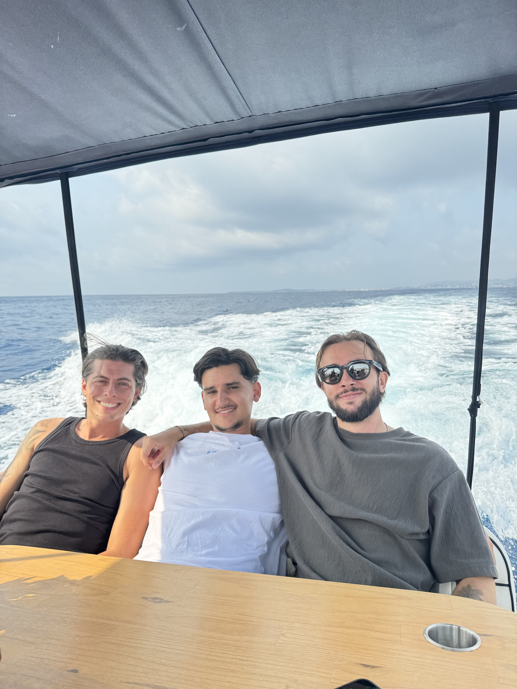
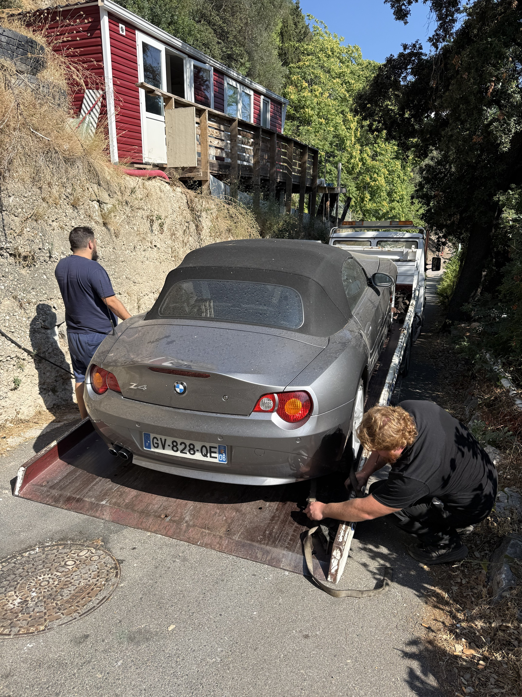

Achat-revente et importation automobile
Apprendre le métier, obtenir les accès, et réaliser ses premières opérations accompagné.
Avant de former, j'ai fait tourner l'activité.
Trois repères, sur six ans de terrain.
Ce que je transmets, ce sont les méthodes qui ont produit ces résultats.
« Une recherche réussie se termine ici : les clés remises, la plaque MOTORSPORT posée. »
Trois réalités du métier
À comprendre avant de se lancer.
La marge se fait à l'achat
Un véhicule bien acheté est déjà à moitié revendu. Tout se joue sur le sourcing et l'estimation, pas sur la négociation finale.
L'import ouvre le marché
Acheter en Europe et revendre en France, c'est ce qui crée l'écart de prix. Encore faut-il savoir gérer les démarches.
Le commercial fait la vente
À véhicule égal, c'est l'approche et la confiance qui décident le client, et qui protègent ta marge.

Les outils et le réseau que j'utilise au quotidien, mis à ta disposition.
Les logiciels
Ceux qui me servent à estimer, sourcer et suivre mes véhicules.
Mes contacts
Le carnet d'adresses qui fait gagner des mois de tâtonnement.
Le parrainage
L'accès aux plateformes et aux enchères pro, partout en Europe.
Le garantisseur
Mon partenaire qui garantit les véhicules que tu revends.
Chaque bloc peut être pris seul
Ou dans le cadre du programme complet.
Commercial
Approche client, posture, négociation, closing.
Juridique et fiscal
Quelle structure choisir, et comment l'utiliser.
Achat-revente
Sourcing, estimation, calcul de la marge réelle.
Dépôt-vente
Contrat, commission, gestion du stock.
Importation
Toutes les démarches administratives, de A à Z.
Accès et réseau
Logiciels, contacts, parrainages, garantisseur.
L'importation est le module qui change tout : c'est lui qui crée la marge.
« Ce métier, je le fais depuis six ans. Ce que je transmets, c'est du vécu — pas de la théorie. »
À la carte
On choisit ensemble, selon ton objectif et le temps que tu peux y consacrer.
- Tu choisis les modules qui t'intéressent
- Format court, on va droit au but
- Idéal si tu as déjà des bases sur le reste
Le programme complet
- Tous les modules, dans l'ordre logique
- Une série d'appels, autant qu'il en faut
- Un accompagnement sur tes premières voitures
- Tous les accès : outils, contacts, garantisseur
Le déroulé du programme complet
On fait le point
Ton objectif, ton temps disponible, ton niveau de départ.
Les fondations
Le commercial, puis l'achat-revente et l'importation.
La structure
Le cadre juridique et fiscal, pour travailler proprement.
Le terrain
Je t'accompagne sur tes premières voitures, de l'achat à la revente.
À la carte, même principe : on isole l'étape qui t'intéresse.
Salarié en quête de challenge, envie d'un complément de revenus, ou projet de vraie reconversion — à chacun son objectif.
Le défi professionnel
Sortir de la routine et apprendre un vrai métier de terrain, à ton rythme, en parallèle de ton poste actuel.
Le complément de revenus
Faire de l'achat-revente à côté, pour arrondir tes fins de mois sans tout bouleverser.
Le vrai business
Construire une activité automobile complète, jusqu'à pouvoir en vivre pleinement.
On en parle, sans engagement
- Un premier échange gratuit, en visio ou en direct
- Je réponds à toutes tes questions, quel que soit ton point de départ
- On voit ce qui te correspond, et on décide seulement après